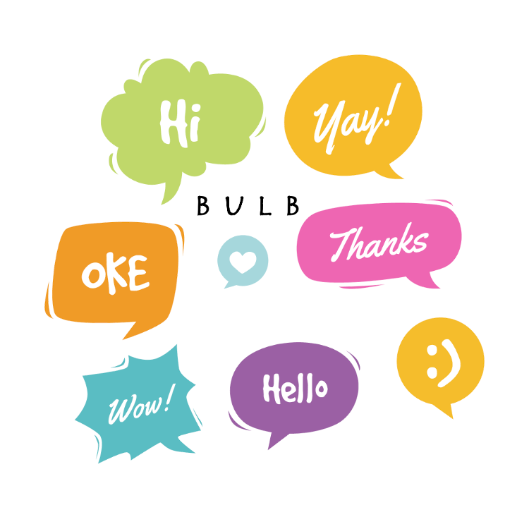

<!-- <ion-toolbar color="primary">
  <ion-title>Login Component</ion-title>
</ion-toolbar> -->

<!-- <ion-icon name="at"></ion-icon> -->


<ion-content text-center>

  

  <ion-grid>

    <ion-footer>

      <ion-row>

        <ion-col class="ion-text-start ion-align-self-end">
          <app-user-online></app-user-online>
        </ion-col>

        <ion-col class="ion-align-self-end">
          <!-- <app-status></app-status> -->
        </ion-col>

        <ion-col class="ion-text-end ion-align-self-end">
          <a [routerLink]="['/profile']">
            <ion-button>Login</ion-button>
          </a>
        </ion-col>

      </ion-row>

    </ion-footer>

  </ion-grid>

</ion-content>